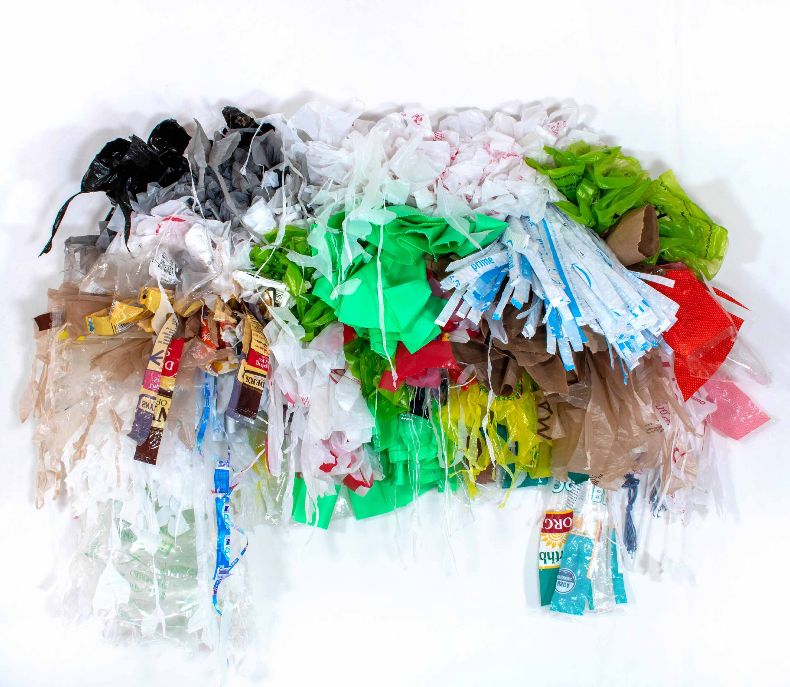
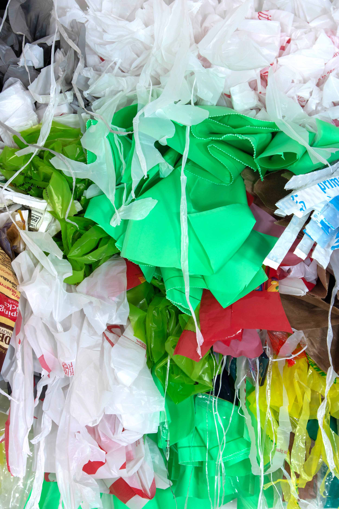

ONLY TIME MAKES IT HUMAN II

I am continuing the series with the same foundational ideas. This time I wanted to figure out a
way to use this piece to accentuate movement and volume three-dimensionally. This piece is technically
smaller than the previous one, but it protrudes out much more.
I decided to document this piece as wearable. The volume and shape reminded me so much of a
garment and tulle.
Types/brands of plastic: target bag, jewel bag, michael’s bag, mariano’s bag, amazon
plastic shipping package, green doggy bags, green “compostable” plastic bags, garden fresh bag, sniders
pretzels bag, plastic bag that held broccoli, mentos gum plastic wrapper packaging, red ribbon bag,
brown bag, black plastic bag, plastic air packaging.
2020, plastic grocery bags, warping yarn, 32"x 42"
